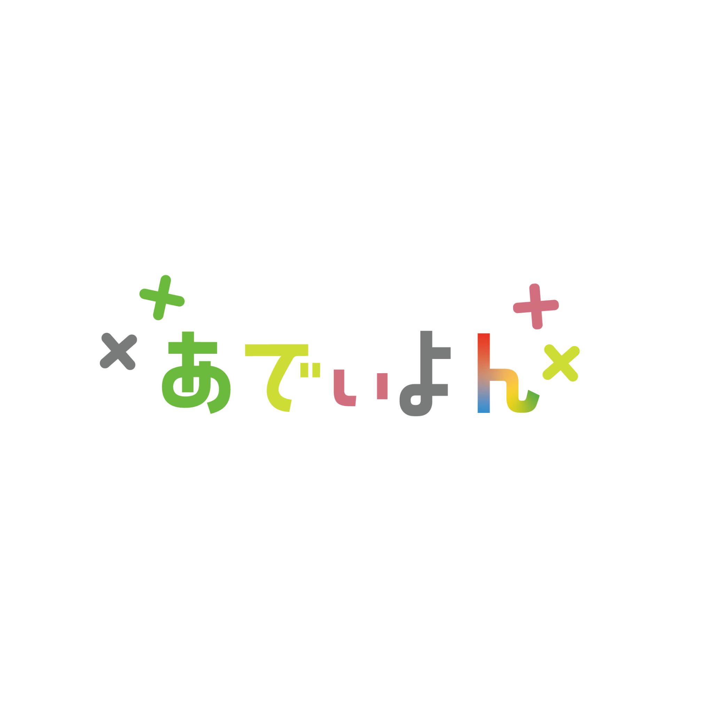

あでぃよんについて:
あでぃよんは、活動者が参加するインターネットバラエティ企画から始まりました。ゲーム、クイズ、検証と、企画によって集まる顔ぶれも遊び方も変わります。
ふだんの活動では出会わない人と、一緒に遊ぶきっかけをつくる。ADD:ONにも、あでぃよんが大事にしてきたその考えがつながっています。

01
みんなで遊べる企画
ゲームやクイズ、検証など、出演者の組み合わせで面白さが変わる企画を手がけています。
02
活動者の交流
企画で一緒に遊ぶところから、ふだんの配信や活動にもつながる出会いが生まれます。
03
遊ぶ場所をつくる
企画専用のWebサイトやゲーム内の遊びも、運営チームが企画に合わせてつくっています。
あでぃよんが運営する街
ADD:ON
ADYGTAから始まった活動者向けの街づくりを、ADD:ON ZEROに引き継いでいます。参加者が仕事や遊びを通じて出会える、非RPのFiveMサーバーです。
プロジェクトを見る